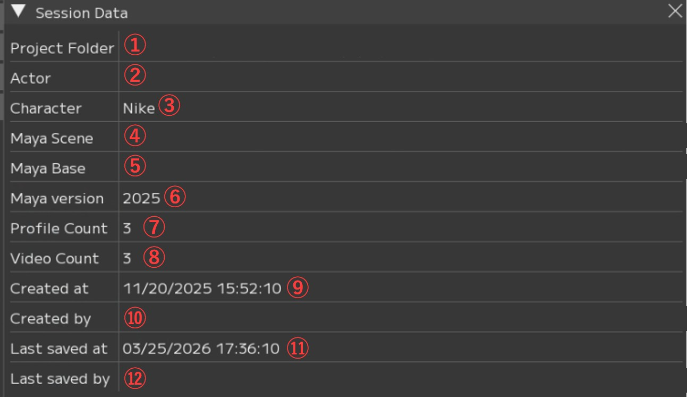
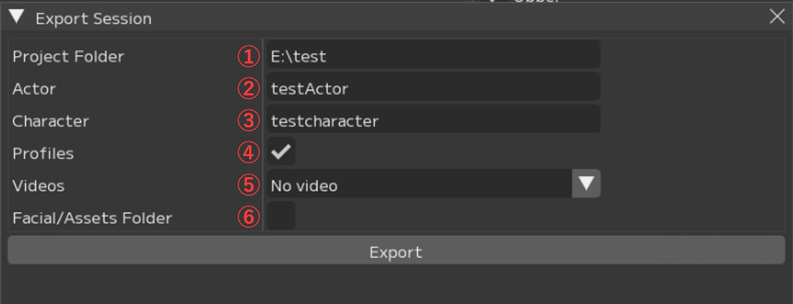

File
Fileメニューのうち、Session（セッション）ファイルの新規作成、保存、読み込みなど、プロジェクト管理に関連するメニュー項目について説明します。
※File ▶ Settingsについては別ページを参照ください。
{kind=link}
Session(セッション)ファイルに関連したメニューです。
Sessionを開く、設定の変更、新規Sessionの作成などを実行することができます。

① New：Sessionを新規で作成、「Create new Session」ウィンドウを開く
② Open：Sessionを開く
・Open...：ダイアログから .yaml ファイルを選択して Session を開きます。
・「パス」：最近使用した Session のパスが表示されます。
③ Info：「Session Data」ウィンドウを開く
④ Export：Session をエクスポートするための「Export Session」ウィンドウを開く
・Session ▶ New
Sessionを新規作成する際に開かれるウィンドウです。

① Project Folder：FCSの作業データを置きたい場所（Root）のパス入力欄
【Browse...】：ダイアログを開いてプロジェクトフォルダの作成先を入力します。
【Create】：パス入力後、FCSのプロジェクトフォルダを作成します。
② Actor：解析する動画のアクター（演技者）名入力欄
※既に該当アクターのフォルダが存在する場合、プルダウンから選択できます。
【+】「Create new actor」ウィンドウを起動し、アクター名のフォルダを作成します。
アクター名はプルダウンに追加されます。
③ Character：3Dモデルのキャラクター名入力欄
【+】「Create new character folder」ウィンドウを起動し、キャラクター名のフォルダを作成します。
キャラクター名はプルダウンに追加されます。
④ Maya Scene：3DモデルのMayaシーンのパス入力欄
【Browse...】：ダイアログを開いてパスを入力します。
⑤ Maya Base：「workspace.mel」があるフォルダのパスを入力
【Browse...】：ダイアログを開いてパスを入力します。
⑥ Maya Ver：3Dモデルを作成したMayaのバージョンを指定
Create new Sessionで作成されるフォルダ構造

*赤枠：Project Folderで作成されるフォルダ
*青枠：Actorで作成されるフォルダ
*緑枠：Characterで作成されるフォルダ
Facial ：動画やMayaシーンデータ等素材を保存する場所
Assets：Mayaのプロジェクトファイル（Assets以下）を保存
RecData：ROM体操やFCSで解析したい動画を保存
Scene：アニメーション出力時のデフォルト出力先
SetData：アニメーション出力で「audio」を選択した場合のwav出力先
FCS ：解析に使用するデータが保存されるプロジェクトフォルダ
Actor：Actor名（入力した名前）のフォルダ
Character：Character名（入力した名前）のフォルダ
RetargetData：作成したProfileの編集データ
VideoData：解析動画のキャッシュ
.lock：競合防止用のロックファイル
fcs_session.yaml：Session情報を保存しているファイル
・Session ▶ info
右クリックメニューから内容のコピーや編集を行うことができます。
{kind=link}

項目 |
説明 |
右クリックメニュー |
|---|---|---|
① Project Folder |
プロジェクトフォルダのパス |
パスのコピー |
② Actor |
アクター名 |
リネーム・コピー |
③ Character |
キャラクター名 |
リネーム・コピー |
④ Maya Scene |
Mayaシーンパス |
パスのコピー・変更 |
⑤ Maya Base |
workspace.melのパス |
パスのコピー・変更 |
⑥ Maya version |
Mayaバージョン |
コピー・変更 |
⑦ Profile Count |
セッション内のプロファイルの数 |
コピー |
⑧ Video Count |
セッションにインポートした動画の数 |
コピー |
⑨ Created at |
セッション作成日時 |
コピー |
⑩ Created by |
セッション作成者 |
コピー |
⑪ Last saved at |
最終保存日時 |
コピー |
⑫ Last saved by |
最終保存者 |
コピー |
・Session ▶ Export
作業したSessionを出力することができます。
Sessionのエクスポートについては作業フロー/エクスポートを参照ください。
{kind=link}

①Project Folder：出力先を指定
②Actor：アクター名を指定 ※アーカイブ化の場合はそのままでも問題ありません
③Character：キャラクター名を指定 ※アーカイブ化の場合はそのままでも問題ありません
④Profile：現在のセッションのプロファイルを出力するかどうかを指定
⑤Videos：出力先にビデオデータをコピーするかを指定
・ No video：動画データをコピーしない
・ Associated video：関連する動画のみコピー
・ All files：Recdata内のすべての動画データをコピー
⑥Facial/Assets Folder：出力先にFacial/Assetsのフォルダーをコピーするかを指定
Note
Project Folderの項目ではエクスポート先のプロジェクトフォルダのパスを指定します。
このとき、プロジェクトフォルダ以下のフォルダ構造が存在しない場合は新しくフォルダが
作成される仕様となっています。
E:\test\FCS\testActor\testCharacterと同じ階層にtestCharacter2をエクスポートしたい場合、 以下のように出力先を指定してください。
Project Folder：E:\test Character：testCharacter2
Menu説明 目次
〇File：Session(セッション)ファイルの管理と基本操作
〇Settings：File/Settings FCS全体の環境設定と動作オプション
〇Window：各種ウィンドウの表示・操作ガイド
〇Maya：Mayaの起動・連携
〇View：作業画面のレイアウト調整
〇Explore：FCSからWindowsエクスプローラーのファイル参照
〇Info：バージョン情報など